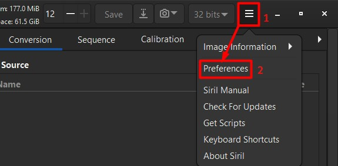
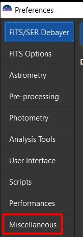
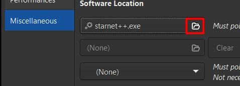
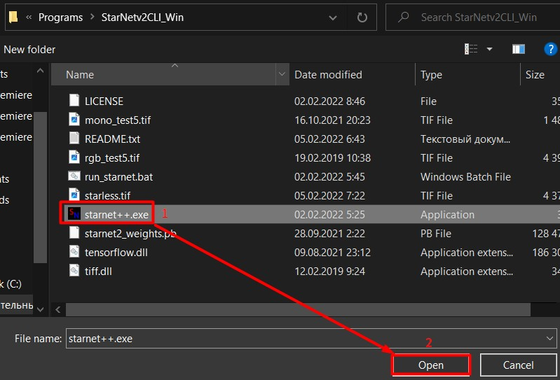
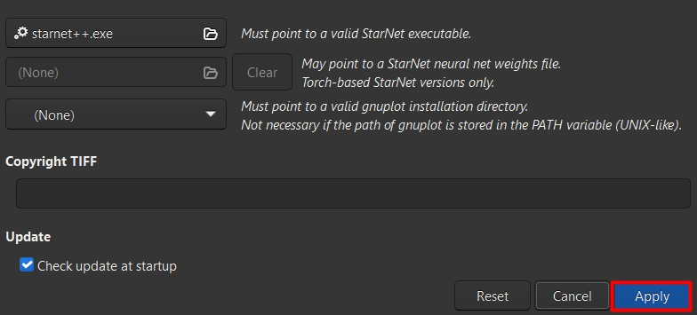

Do you want to improve your astrophotography editing skills, or learn this difficult but very interesting skill?
In this case, you have come to the right place and you will get everything you
need to start processing images like a pro completely free!
First you need to download the necessary programs:
- SiriL - astrophotography editing tool.
- StarNet++ - star removing tool.
- GIMP - image editor.
- Denoise - noise reduction program.
Read README.TXT at the beginning!
StarNet++:
In order for this tool to work, you need to configure it.
Unzip and place it in a location convenient for you.
Open SiriL and go to the preference:

Miscellaneous:


Find your StarNet++ folder and select starnet.exe:

And apply:

Now you`re ready for processing!